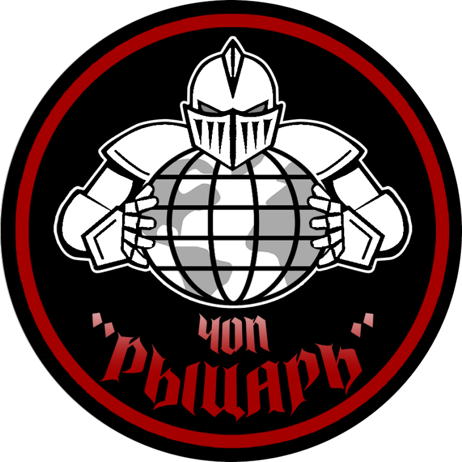

01
Охрана объектов
Физическая охрана зданий, предприятий и территорий: КПП, пропускной режим, патрулирование и видеоконтроль.
от 250 ₽ / часневооружённый 24-часовой пост

РЫЦАРЬ частное охранное предприятие Дежурная часть 24/7 +7 903 586-07-75На страже с 1996 года · Москва и вся Россия
Разрабатываем и внедряем физическую и интеллектуальную систему охраны по всей России. Объекты, грузы, люди — под защитой группы быстрого реагирования и бывших офицеров силовых структур.
СО ЩИТОМ
ПОСТ 01
Полный периметр защиты — от поста на проходной до личного телохранителя и инженерных систем.
Физическая охрана зданий, предприятий и территорий: КПП, пропускной режим, патрулирование и видеоконтроль.
от 250 ₽ / часневооружённый 24-часовой пост
Вооружённое и невооружённое сопровождение грузов по Москве, области и всей РФ — разово или постоянно.
от 7 000 ₽ / суткиэкипаж и спецсредства
Телохранители, охрана детей, сопровождение VIP-персон и мобильный телохранитель по вызову.
от 1 000 ₽ / часили от 340 000 ₽ / месяц
Лицензированные вооружённые сотрудники для объектов, грузов и людей, когда нужна 100% уверенность.
от 350 ₽ / часобъект, 24-часовой пост
Установка и монтаж систем видеонаблюдения и охранно-пожарных сигнализаций.
Расчёт после выездапод объект «под ключ»
Грамотные рекомендации по охране, экспертная оценка защищённости объекта, при необходимости — выезд.
от 3 000 ₽без выезда на объект
ПОСТ 02
Для осуществления своей деятельности у нас есть всё необходимое.
Согласованный с УФСБ России по САО г. Москвы, ГУ МЧС России по г. Москве и ГУ Росгвардии по г. Москве.
Частное охранное предприятие «РЫЦАРЬ» гарантирует соблюдение коммерческой тайны, учёт интересов своих клиентов, соблюдение профессиональной этики, надёжность и качество всех предоставляемых услуг, стоимость которых соответствует качеству.
ПОСТ 03
Четыре шага — и объект под охраной. Обычно проходим их за один–два дня.
Звонок дежурному или форма на сайте. Уточняем задачу и сроки.
Выезд специалиста, аудит объекта и анализ рисков на месте.
Схема охраны, расчёт стоимости и прозрачный договор.
Расстановка сотрудников, запуск систем и контроль 24/7.
ПОСТ 04
Дежурная часть на связи круглосуточно. Оставьте заявку — перезвоним и просчитаем пост под ваш объект.
Направление 01
Это одна из самых востребованных услуг на рынке охраны. Физическая охрана объектов — один из самых надёжных способов обеспечить безопасность бизнеса, людей и имущества.
Основная цель — обеспечение полной безопасности на всей территории объекта, защита имущества, оборудования, информации и людей, находящихся на объекте. Используемые охраной техническое оборудование, методики и способы могут значительно отличаться на различных объектах. Список конкретных задач также может варьироваться, но чаще всего в функции физической охраны входят следующие пункты:
Физическая охрана любого объекта начинается с предварительного осмотра территории и всех помещений. При обследовании учитываются все факторы: расположение и размеры объекта, размещение зданий, оборудования и иных материально-технических ценностей на территории, график и особенности работы компании, её специфика и назначение, а также условия местности, соседство с другими объектами и др. Также во время осмотра объекта охраны определяются потенциальные слабые места, требующие особого внимания.
После проведения осмотра объекта специалист охранной службы с учётом всех вышеперечисленных фактов составляет план, по которому будет строиться охрана объекта. В плане указывается, сколько необходимо постов, количество охранников, требующиеся спецсредства, системы обеспечения контроля доступа и техническое оборудование. На этом этапе с заказчиком согласуются все детали физической охраны объекта и общая стоимость предоставления услуги.
Завершающий этап в организации охраны — претворение в жизнь согласованного плана охраны: выставление постов на объекте, проверка работы оборудования, дополнительных спецсредств и коммуникаций, оттачивание взаимодействия между отдельными субъектами охраны. Проверка системы охраны — непременный элемент, который позволяет вовремя устранить малейшие ошибки.
ЧОП «Рыцарь» ответственно относится к своим обязательствам, и даже после налаживания работы охранной системы мы продолжаем «держать руку на пульсе» и регулярно проверяем качество работы охранников и надёжность оборудования.
*Цена на предоставляемые услуги является не окончательной и может быть изменена как в большую, так и в меньшую сторону в зависимости от дополнительных требований Заказчика, сложности объекта, степени риска и т. д.
| Невооружённая охрана, 12-часовой пост | от 360 ₽/час |
|---|---|
| Невооружённая охрана, 24-часовой пост | от 250 ₽/час |
| Вооружённая охрана, 12-часовой пост | от 620 ₽/час |
| Вооружённая охрана, 24-часовой пост | от 590 ₽/час |
Направление 02
Сложная и требующая большого профессионализма охранная услуга. ЧОП «Рыцарь» на протяжении многих лет нарабатывала необходимый опыт, накапливала особые приёмы и способы, а также совершенствовала методы работы в сфере охраны в целом, и в сопровождении грузов в частности.
В зависимости от вида груза, дальности пути и даже типа транспорта, а также иных факторов, используемый вид сопровождения может сильно разниться. Охрана может находиться как в транспорте, перевозящем груз, так и использовать автомобиль сопровождения. Возможно сопровождение колонны автомобилей с использованием машины прикрытия. Также охрана груза может быть как вооружённой, так и нет и использовать различные технические средства.
ЧОП «Рыцарь» предоставляет свои услуги по охране и сопровождению грузов как разово, так и на постоянной основе.
*Цена на предоставляемые услуги является не окончательной и может быть изменена как в большую, так и в меньшую сторону в зависимости от дополнительных требований Заказчика, сложности объекта, степени риска и т.д.
| Сопровождение со спецсредствами (Москва и МО) | от 7 000 ₽/сутки |
|---|---|
| Сопровождение с вооружением (Москва и МО) | от 10 000 ₽/сутки |
| Сопровождение со спецсредствами (РФ) | от 8 000 ₽/сутки |
| Сопровождение с вооружением (РФ) | от 12 000 ₽/сутки |
Направление 03
ЧОП «Рыцарь» предоставляет следующие виды личной охраны:
На телохранителя возложена важная миссия — предотвращение любых угроз в отношении охраняемого лица.
Оказывать услуги личной охраны, сотрудники нашей охранной компании получают серьёзную и тщательную спецподготовку. Сотрудники личной охраны должны быть не только физически сильными и тренированными бойцами, владеющими оружием и спецсредствами, но и обладать мгновенной реакцией, стрессоустойчивостью, острым умом, а также иметь высокую квалификацию и обширный опыт. Наша компания тщательно следит за тем, чтобы все сотрудники компании регулярно повышали свою квалификацию и поддерживали себя в хорошей физической форме.
Телохранители подбираются в зависимости от пожеланий и целей клиента, в соответствии с уровнем сложности и опасности задания.
Личная охрана — это комплекс защитных мер, основная задача которых предотвратить любое нанесение физического или психоэмоционального вреда охраняемому лицу. В первую очередь, конечно, безопасность клиента зависит от телохранителя, выбранной им стратегии и его своевременных действий. Однако только непосредственной защитой клиента обязанности личной охраны не исчерпываются.
*Цена на предоставляемые услуги является не окончательной и может быть изменена как в большую, так и в меньшую сторону в зависимости от дополнительных требований Заказчика, сложности объекта, степени риска и т.д.
| Телохранитель со спецсредствами, разовая услуга (не менее 10 часов) | от 1 000 ₽/час |
|---|---|
| Телохранитель со спецсредствами или травматическим оружием, постоянная услуга | от 340 000 ₽/месяц |
| Вооружённый телохранитель, разовая услуга (не менее 8 часов) | от 1 500 ₽/час |
| Вооружённый телохранитель, постоянная услуга | от 370 000 ₽/месяц |
Направление 04
Самый эффективный и ответственный вид охраны, предоставляемый ЧОПами, к его возможностям прибегают, когда вопрос стоит ребром, а уверенность в безопасности должна быть 100%.
Это может быть как безопасность ваших близких, так и материальных предметов, обладающих особой ценностью. ЧОП «Рыцарь» с высоким профессионализмом обеспечит надёжную охрану, применив для этого все свои навыки и накопленный опыт.
Вооружённая охрана может применяться в самых различных ситуациях и на любых объектах, главный критерий — необходимость в высоком уровне безопасности. Охрана осуществляется исключительно лицензированными сотрудниками, прошедшими всю необходимую подготовку, обладающими ценными знаниями и опытом. Охранники ЧОП «Рыцарь» — профессионалы, находящиеся в прекрасной физической форме, оснащённые необходимыми техническими спецсредствами. Мы предоставляем свои услуги по Москве, Московской области и во всех регионах РФ.
Вооружённая охрана от ЧОП «Рыцарь» — это надёжная, профессиональная и эффективная охрана вашей семьи, недвижимости и имущества!
Все наши охранники — лицензированные опытные сотрудники с хорошей репутацией, прошедшие все проверки, а также имеющие необходимую физическую подготовку и владеющие оружием и приёмами самообороны.
Каждый клиент ЧОП «Рыцарь» получает индивидуальный подход и именно те услуги высокого качества и по приятным расценкам, которые ему необходимы.
*Цена на предоставляемые услуги является не окончательной и может быть изменена как в большую, так и в меньшую сторону в зависимости от дополнительных требований Заказчика, сложности объекта, степени риска и т.д.
| Вооружённая охрана объектов, 12-часовой пост | от 460 ₽/час |
|---|---|
| Вооружённая охрана объектов, 24-часовой пост | от 350 ₽/час |
| Сопровождение с вооружением (Москва и МО) | от 7 000 ₽/сутки |
| Сопровождение с вооружением (РФ) | от 8 000 ₽/сутки |
| Вооружённый телохранитель, разовая услуга (не менее 8 часов) | от 1 500 ₽/час |
| Вооружённый телохранитель, постоянная услуга | от 370 000 ₽/месяц |
Направление 05
Расчёт установки и монтажа видеонаблюдения и охранно-пожарных сигнализаций производится после выезда на объект специалистов, для понимания объёма, специфики и сложности выполняемых работ.
Направление 06
Важный момент в организации безопасности, будь то предприятие, частная собственность или перевозка груза.
На консультации клиент получает грамотную информационную поддержку и необходимые рекомендации о способах и методах защиты от неправомерных действий. Консультация — это верный способ определиться с видом охраны, количеством человек и постов, необходимости вооружённой охраны и другими важными нюансами. При необходимости будет совершён выезд на место с осмотром.
ЧОП «Рыцарь» оказывает консультации по вопросам охраны и безопасности:
*Цена на предоставляемые услуги является не окончательной и может быть изменена как в большую, так и в меньшую сторону в зависимости от дополнительных требований Заказчика, сложности объекта, степени риска и т.д.
| Без выезда на объект | от 3 000 ₽ |
|---|---|
| С выездом на объект | от 5 000 ₽ |